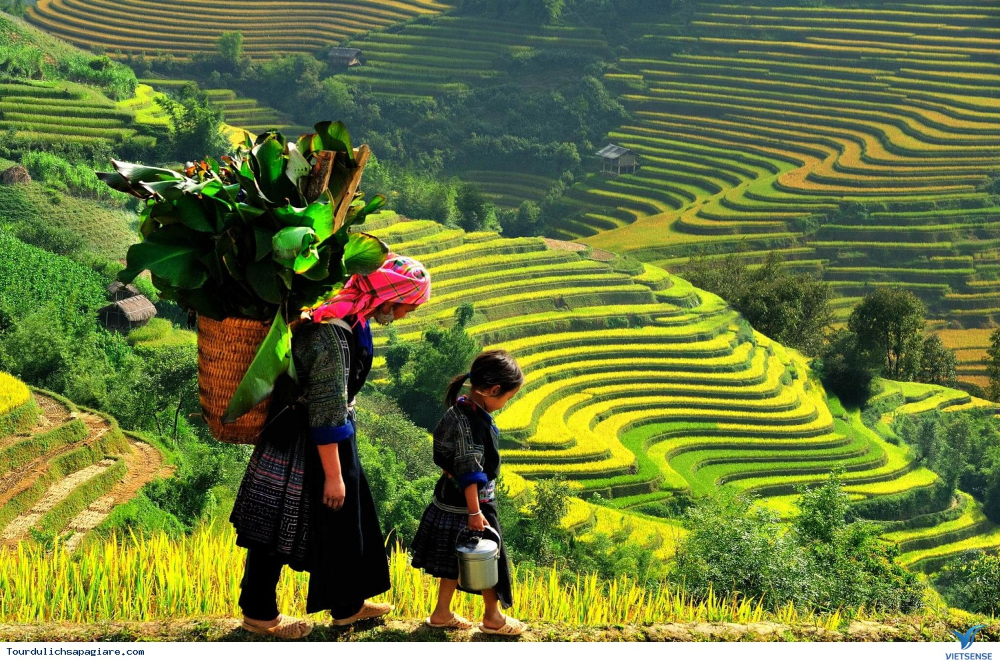

🏞 LỊCH TRÌNH TREKKING 1 DAY: SA PA – Ý LINH HỒ – LAO CHẢI – TẢ VAN
Tổng độ dài: ~11km
Thời gian di chuyển: 4–5 tiếng đi bộ
Bắt đầu: 9:00 sáng tại Sa Pa
Kết thúc: 16:00–17:00 chiều tại Tả Van
Điểm nổi bật: Cảnh ruộng bậc thang, làng dân tộc H'Mông, Dao, Dzáy, suối Mường Hoa

📍CHI TIẾT LỊCH TRÌNH
⏰ 08:30 – 09:00: Chuẩn bị và khởi hành
Tập trung tại khách sạn hoặc trung tâm thị xã Sa Pa.
Hướng dẫn viên điểm danh, phổ biến cung đường, kiểm tra đồ đạc cần thiết: nước, áo mưa, giày trekking, kem chống nắng...
⛰ 09:00 – 10:30: Trekking từ Sa Pa đến bản Ý Linh Hồ (~3km)
Bắt đầu men theo con đường mòn uốn lượn qua các quả đồi, ruộng bậc thang.
Khám phá bản Ý Linh Hồ – nơi sinh sống của người H'Mông đen, ít bị du lịch hóa, phong cảnh nguyên sơ.
Có thể dừng chụp hình, nghỉ ngơi nhẹ giữa đường.
⛰ 10:30 – 12:00: Tiếp tục đi bộ đến bản Lao Chải (~3km)
Đi men theo sườn núi, ngắm toàn cảnh thung lũng Mường Hoa.
Tham quan bản Lao Chải – làng người H'Mông đen lớn, nổi tiếng với nghề dệt thổ cẩm truyền thống.
Dừng lại ăn trưa tại bản Lao Chải.
🍱 12:00 – 13:30: Nghỉ trưa tại Lao Chải
Thưởng thức bữa ăn dân dã với món ăn địa phương như: thịt nướng, cơm lam, rau rừng, trứng...
Giao lưu với người bản địa, tìm hiểu văn hóa – đời sống.
🚶 13:30 – 15:30: Trekking đến bản Tả Van (~5km)
Tiếp tục băng qua những thửa ruộng bậc thang kỳ vĩ ven suối Mường Hoa.
Thăm bản Tả Van – nơi sinh sống của người Giáy.
Ghé thăm một số ngôi nhà truyền thống, cầu Mây nếu còn thời gian.
⏰ 15:30 – 16:30: Kết thúc hành trình
Nghỉ ngơi, uống nước, tổng kết chuyến đi.
Xe đón tại Tả Van về lại thị trấn Sa Pa (hoặc tiếp tục ngủ homestay nếu có lịch ở lại).